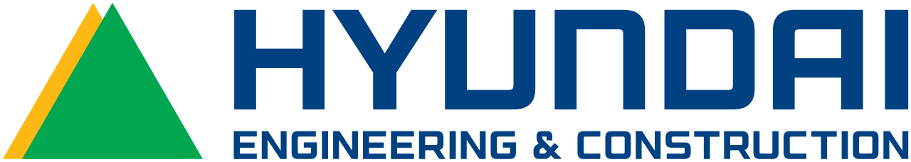
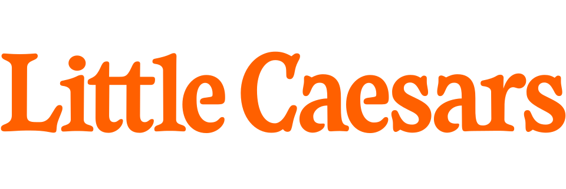
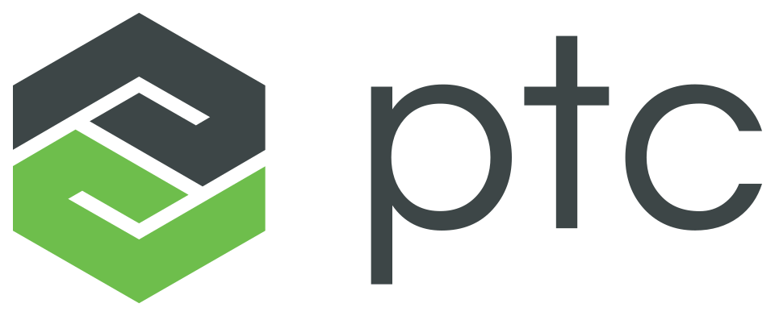
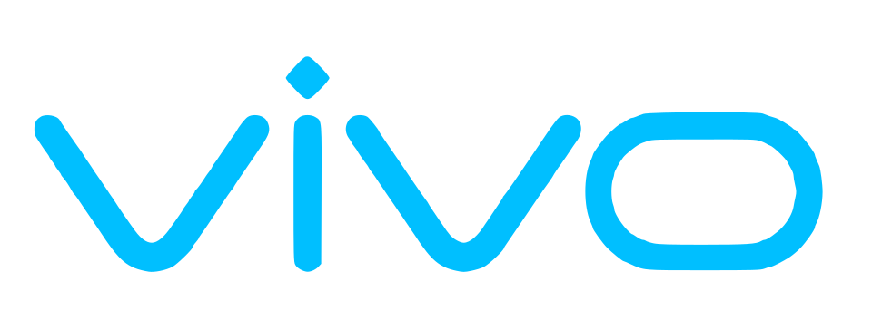
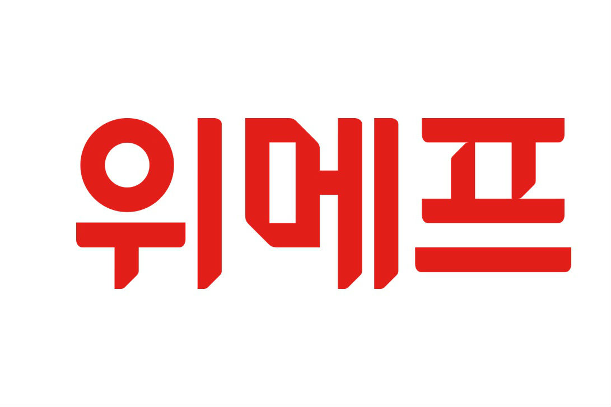

5월에 태어난 브랜드 108곳
5월에 태어난 브랜드 108곳을 탄생일 순으로 모았습니다. 폭스바겐(Volkswagen), 소니그룹(Sony Group), 노키아(Nokia)가 모두 5월생입니다.
2026년 5월, 주년을 맞는 브랜드
5월 탄생 달력
날짜까지 확인된 94곳을 날짜 칸에 놓았습니다.
- 1히노 자동차도쿄전력+9
- 2허드슨 베이 회사코웨이+2
- 3크로락스델+1
- 4소시에테 제네랄Kompania Piwowarska+1
- 5페덱스롯데호텔+2
- 6팔란티어 테크놀로지스
- 7종근당소니그룹+1
- 8코카-콜라파라마운트 픽처스+2
- 9세아트아티스트컴퍼니+1
- 10슈프링어한국타이어+2
- 11인터콘티넨털 익스체인지
- 12노키아
- 13포스코퓨처엠SM Culture & Contents+1
- 14Regional Brewery페레로
- 15필립스맥도날드+5
- 16한진해운
- 17팀홀튼이노션+2
- 18오리온 맥주돌비 래버러토리스+2
- 19민음사GS칼텍스+1
- 20터키항공
- 21
- 22OGNvivo
- 23동서식품현대엘리베이터+1
- 24Sarajevska PivaraGaffel Becker & Co
- 25현대건설마리메꼬
- 26
- 27호세 쿠엘보일렉트로닉 아츠
- 28시티즌시계폭스바겐+4
- 29
- 30캡콤보타닉+2
- 31힐튼 월드와이드20세기 스튜디오+4
5월생 브랜드 연대순
 허드슨 베이 회사(Hudson's Bay Company)캐나다 · 리테일·커머스
허드슨 베이 회사(Hudson's Bay Company)캐나다 · 리테일·커머스 호세 쿠엘보(Jose Cuervo)멕시코 · 식음료
호세 쿠엘보(Jose Cuervo)멕시코 · 식음료- 슈슈프링어(Springer Science+Business Media)독일 · 미디어·엔터테인먼트
- 소시에테 제네랄(Société Générale)프랑스 · 금융
 Sarajevska Pivara식음료
Sarajevska Pivara식음료 노키아(Nokia)핀란드 · 기술·전자
노키아(Nokia)핀란드 · 기술·전자 코카-콜라(Coca-Cola)식음료
코카-콜라(Coca-Cola)식음료 미쓰이 스미토모 건설(Sumitomo Mitsui Construction)일본 · 홈·라이프스타일
미쓰이 스미토모 건설(Sumitomo Mitsui Construction)일본 · 홈·라이프스타일 필립스(Philips)기술·전자
필립스(Philips)기술·전자 Gaffel Becker & Co독일 · 식음료
Gaffel Becker & Co독일 · 식음료 파라마운트 픽처스(Paramount Pictures)미국 · 미디어·엔터테인먼트
파라마운트 픽처스(Paramount Pictures)미국 · 미디어·엔터테인먼트 크로락스(Clorox)미국 · 홈·라이프스타일
크로락스(Clorox)미국 · 홈·라이프스타일 힐튼 월드와이드(Hilton Worldwide)미국 · 여행·호스피탈리티
힐튼 월드와이드(Hilton Worldwide)미국 · 여행·호스피탈리티- 엘엘렉트롤라(Electrola)미디어·엔터테인먼트
 Regional Brewery식음료
Regional Brewery식음료 피닌파리나(Pininfarina)이탈리아 · 모빌리티
피닌파리나(Pininfarina)이탈리아 · 모빌리티 시티즌시계(Citizen Watch)일본 · 기술·전자
시티즌시계(Citizen Watch)일본 · 기술·전자 터키항공(Turkish Airlines)터키 · 모빌리티
터키항공(Turkish Airlines)터키 · 모빌리티 20세기 스튜디오(20th Century Studios)미국 · 미디어·엔터테인먼트
20세기 스튜디오(20th Century Studios)미국 · 미디어·엔터테인먼트 폭스바겐(Volkswagen)독일 · 모빌리티
폭스바겐(Volkswagen)독일 · 모빌리티 폭스바겐 AG(Volkswagen Group)독일 · 모빌리티
폭스바겐 AG(Volkswagen Group)독일 · 모빌리티 맥도날드(McDonald's)식음료
맥도날드(McDonald's)식음료 종근당(Chong Kun Dang)한국 · 헬스·제약
종근당(Chong Kun Dang)한국 · 헬스·제약- 한국타이어(Hankook Tire)한국 · 모빌리티
 히노 자동차(Hino Motors)일본 · 모빌리티
히노 자동차(Hino Motors)일본 · 모빌리티 소니그룹(Sony Group)일본 · 기술·전자
소니그룹(Sony Group)일본 · 기술·전자 페레로(Ferrero SpA)이탈리아 · 식음료
페레로(Ferrero SpA)이탈리아 · 식음료
현대건설(Hyundai E&C)한국 · 브랜드·비즈니스 칠성사이다(Chilsung Cider)한국 · 식음료
칠성사이다(Chilsung Cider)한국 · 식음료 세아트(SEAT)스페인 · 모빌리티
세아트(SEAT)스페인 · 모빌리티- 도쿄전력(TEPCO)일본 · 에너지·산업재
- 마리메꼬(Marimekko)핀란드 · 패션·럭셔리
 OB 맥주(Oriental Brewery)한국 · 식음료
OB 맥주(Oriental Brewery)한국 · 식음료 아메리칸 모터스(American Motors Corporation)미국 · 모빌리티
아메리칸 모터스(American Motors Corporation)미국 · 모빌리티 오리온 맥주(Orion Breweries)일본 · 식음료
오리온 맥주(Orion Breweries)일본 · 식음료 피자헛(Pizza Hut)미국 · 식음료
피자헛(Pizza Hut)미국 · 식음료
리틀 시저스(Little Caesars)미국 · 식음료 LS전선(LS Cable & System)한국 · 기술·전자
LS전선(LS Cable & System)한국 · 기술·전자 팀홀튼(Tim Hortons)캐나다 · 식음료
팀홀튼(Tim Hortons)캐나다 · 식음료 돌비 래버러토리스(Dolby)미국 · 기술·전자
돌비 래버러토리스(Dolby)미국 · 기술·전자 민음사(Minumsa)미디어·엔터테인먼트
민음사(Minumsa)미디어·엔터테인먼트 GS칼텍스(GS Caltex)일본 · 에너지·산업재
GS칼텍스(GS Caltex)일본 · 에너지·산업재 핫 휠(Hot Wheels)홈·라이프스타일
핫 휠(Hot Wheels)홈·라이프스타일 동서식품(Dongsuh Foods)한국 · 식음료
동서식품(Dongsuh Foods)한국 · 식음료 오뚜기(Ottogi)한국 · 식음료
오뚜기(Ottogi)한국 · 식음료 AMD미국 · 기술·전자
AMD미국 · 기술·전자 Stake 포뮬러 원 팀 KICK 자우버(Sauber Motorsport)스위스 · 모빌리티
Stake 포뮬러 원 팀 KICK 자우버(Sauber Motorsport)스위스 · 모빌리티 암트랙(Amtrak)미국 · 모빌리티
암트랙(Amtrak)미국 · 모빌리티 페덱스(FedEx)미국 · 브랜드·비즈니스
페덱스(FedEx)미국 · 브랜드·비즈니스 포스코퓨처엠(POSCO Future M)한국 · 기술·전자
포스코퓨처엠(POSCO Future M)한국 · 기술·전자 롯데호텔(Lotte Hotels & Resorts)한국 · 여행·호스피탈리티
롯데호텔(Lotte Hotels & Resorts)한국 · 여행·호스피탈리티 루빅스 큐브(Rubik's Cube)헝가리 · 홈·라이프스타일
루빅스 큐브(Rubik's Cube)헝가리 · 홈·라이프스타일- 재능교육(JEI Corporation)한국 · 기술·전자
 한진해운(Hanjin Shipping)한국 · 모빌리티
한진해운(Hanjin Shipping)한국 · 모빌리티 캡콤(Capcom)일본 · 미디어·엔터테인먼트
캡콤(Capcom)일본 · 미디어·엔터테인먼트 볼빅(Volvik)한국 · 스포츠·아웃도어
볼빅(Volvik)한국 · 스포츠·아웃도어 SM Culture & Contents한국 · 미디어·엔터테인먼트
SM Culture & Contents한국 · 미디어·엔터테인먼트 풀무원(Pulmuone)한국 · 식음료
풀무원(Pulmuone)한국 · 식음료 일렉트로닉 아츠(Electronic Arts)미국 · 브랜드·비즈니스
일렉트로닉 아츠(Electronic Arts)미국 · 브랜드·비즈니스 델(Dell)미국 · 기술·전자
델(Dell)미국 · 기술·전자- 현대엘리베이터(Hyundai Elevator)한국 · 에너지·산업재

Parametric Technology Corporation미국 · 기술·전자 Healthpeak Properties미국 · 금융
Healthpeak Properties미국 · 금융 삼성SDS(Samsung SDS)한국 · 기술·전자
삼성SDS(Samsung SDS)한국 · 기술·전자 스테이플스(Staples)미국 · 리테일·커머스
스테이플스(Staples)미국 · 리테일·커머스 코웨이(Coway)홈·라이프스타일
코웨이(Coway)홈·라이프스타일 한국콜마(Kolmar Korea)한국 · 뷰티·퍼스널케어
한국콜마(Kolmar Korea)한국 · 뷰티·퍼스널케어 딘타이펑(Din Tai Fung)대만 · 식음료
딘타이펑(Din Tai Fung)대만 · 식음료 청호나이스(Cheongho Nais)한국 · 홈·라이프스타일
청호나이스(Cheongho Nais)한국 · 홈·라이프스타일 에어 노스트룸(Air Nostrum)스페인 · 모빌리티
에어 노스트룸(Air Nostrum)스페인 · 모빌리티 보타닉(Botanic)프랑스 · 리테일·커머스
보타닉(Botanic)프랑스 · 리테일·커머스 HTC기술·전자
HTC기술·전자 미디어텍(MediaTek)대만 · 기술·전자
미디어텍(MediaTek)대만 · 기술·전자 Kompania Piwowarska폴란드 · 식음료
Kompania Piwowarska폴란드 · 식음료 인터콘티넨털 익스체인지(Intercontinental Exchange)미국 · 금융
인터콘티넨털 익스체인지(Intercontinental Exchange)미국 · 금융 OGN한국 · 미디어·엔터테인먼트
OGN한국 · 미디어·엔터테인먼트 아비바(Aviva)영국 · 금융
아비바(Aviva)영국 · 금융 MGM 리조트 인터내셔널(MGM Resorts International)미국 · 여행·호스피탈리티
MGM 리조트 인터내셔널(MGM Resorts International)미국 · 여행·호스피탈리티 주식회사 STX(STX Corporation)한국 · 브랜드·비즈니스
주식회사 STX(STX Corporation)한국 · 브랜드·비즈니스 ADATA기술·전자
ADATA기술·전자 애즈락(ASRock)기술·전자
애즈락(ASRock)기술·전자- 제주국제자유도시개발센터(Jeju Free International City Development Center)한국 · 브랜드·비즈니스
 링크드인(LinkedIn)미국 · 기술·전자
링크드인(LinkedIn)미국 · 기술·전자- 팔란티어 테크놀로지스(Palantir Technologies)미국 · 기술·전자
 이노션(Innocean Worldwide)한국 · 브랜드·비즈니스
이노션(Innocean Worldwide)한국 · 브랜드·비즈니스 네오트랜스(Neo Trans)한국 · 모빌리티
네오트랜스(Neo Trans)한국 · 모빌리티 드롭박스(Dropbox)기술·전자
드롭박스(Dropbox)기술·전자 웅진씽크빅(Woongjin Thinkbig)브랜드·비즈니스
웅진씽크빅(Woongjin Thinkbig)브랜드·비즈니스
vivo기술·전자
위메프(WeMakePrice)기술·전자 티빙(TVING)한국 · 미디어·엔터테인먼트
티빙(TVING)한국 · 미디어·엔터테인먼트 브랜뉴뮤직(Brand New Music)한국 · 미디어·엔터테인먼트
브랜뉴뮤직(Brand New Music)한국 · 미디어·엔터테인먼트 IM금융그룹(iM Financial Group)한국 · 금융
IM금융그룹(iM Financial Group)한국 · 금융 더블유게임즈(DoubleU Games)한국 · 미디어·엔터테인먼트
더블유게임즈(DoubleU Games)한국 · 미디어·엔터테인먼트 Phillips 66미국 · 에너지·산업재
Phillips 66미국 · 에너지·산업재 SK매직(SK Magic)한국 · 홈·라이프스타일
SK매직(SK Magic)한국 · 홈·라이프스타일 디스코드(Discord)기술·전자
디스코드(Discord)기술·전자 스튜디오드래곤(Studio Dragon)한국 · 미디어·엔터테인먼트
스튜디오드래곤(Studio Dragon)한국 · 미디어·엔터테인먼트 아티스트컴퍼니(Artist Company)한국 · 미디어·엔터테인먼트
아티스트컴퍼니(Artist Company)한국 · 미디어·엔터테인먼트 에어로케이(Aero K)한국 · 여행·호스피탈리티
에어로케이(Aero K)한국 · 여행·호스피탈리티- 키키스메(Kisumé)식음료
 서울교통공사(Seoul Metro)한국 · 모빌리티
서울교통공사(Seoul Metro)한국 · 모빌리티 리얼미(Realme)기술·전자
리얼미(Realme)기술·전자 HDC현대산업개발(HDC Hyundai Development)브랜드·비즈니스
HDC현대산업개발(HDC Hyundai Development)브랜드·비즈니스 라이온하트 스튜디오(Lionheart Studio)미디어·엔터테인먼트
라이온하트 스튜디오(Lionheart Studio)미디어·엔터테인먼트 Fenty패션·럭셔리
Fenty패션·럭셔리- 워너 레코드(Warner Records Inc.)미국 · 미디어·엔터테인먼트
 Revvity Inc.미국 · 헬스·제약
Revvity Inc.미국 · 헬스·제약
5월에 태어난 것으로 확인된 브랜드는 108곳입니다. 가장 오래된 곳은 1670년의 허드슨 베이 회사(Hudson's Bay Company), 가장 최근은 2023년의 Revvity Inc.입니다. 2026년 5월에는 코카-콜라(Coca-Cola)(140주년), 소니그룹(Sony Group)(80주년), 페레로(Ferrero SpA)(80주년) 등 12곳이 주년을 맞습니다. 생일이 같은 브랜드도 있습니다. 5월 1일에는 히노 자동차(Hino Motors)(1942)와 도쿄전력(TEPCO)(1951)와 아메리칸 모터스(American Motors Corporation)(1954), 5월 15일에는 필립스(Philips)(1891)와 맥도날드(McDonald's)(1940)와 Stake 포뮬러 원 팀 KICK 자우버(Sauber Motorsport)(1970)가 태어났습니다. 설립연도가 확인된 브랜드는 106개이며 가장 오래된 곳은 1842년, 가장 최근은 2023년에 시작했습니다. 시기별로는 1900년 이전 7개, 1900~1949년 19개, 1950~1999년 46개, 2000년 이후 34개입니다. 수록 자료로는 로고 이미지 105개, 로고 변천 자료 8개, 연혁 타임라인 19개를 갖췄습니다. 이 가운데 88개는 공식 웹사이트가 일치하는 위키데이터 개체로 연결해 두었습니다. 날짜는 위키데이터, 위키백과 정보상자, 브랜드 본문 가운데 같은 연월로 확인되는 값만 썼고, 출처끼리 다르면 싣지 않았습니다.